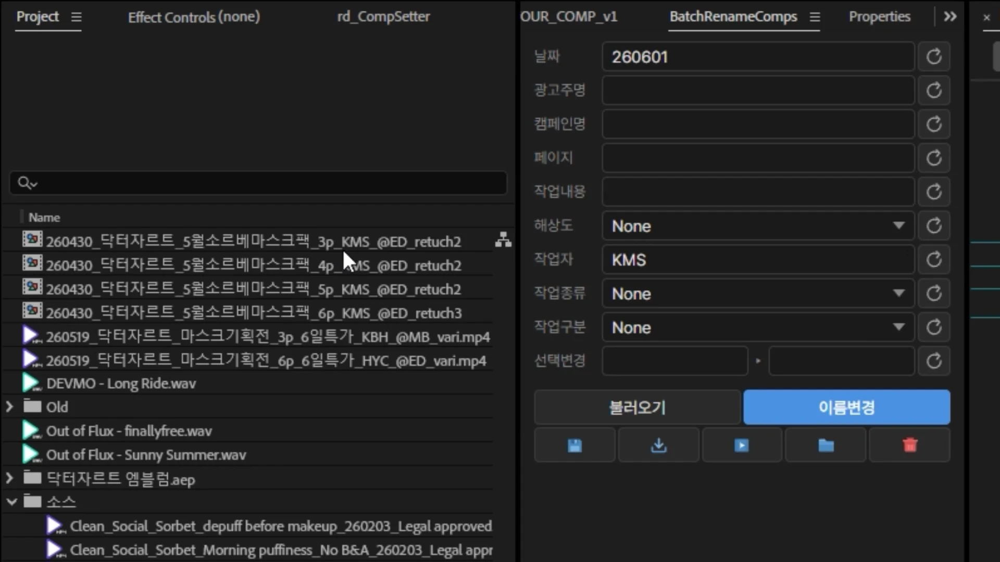
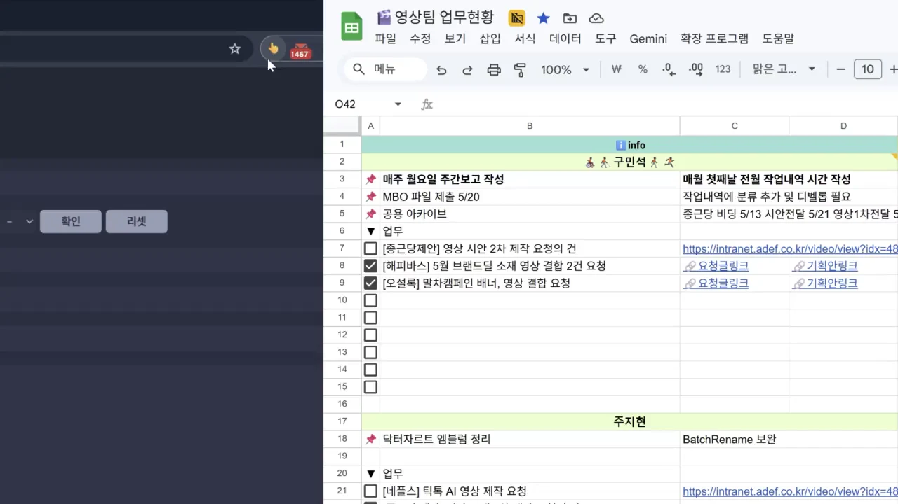
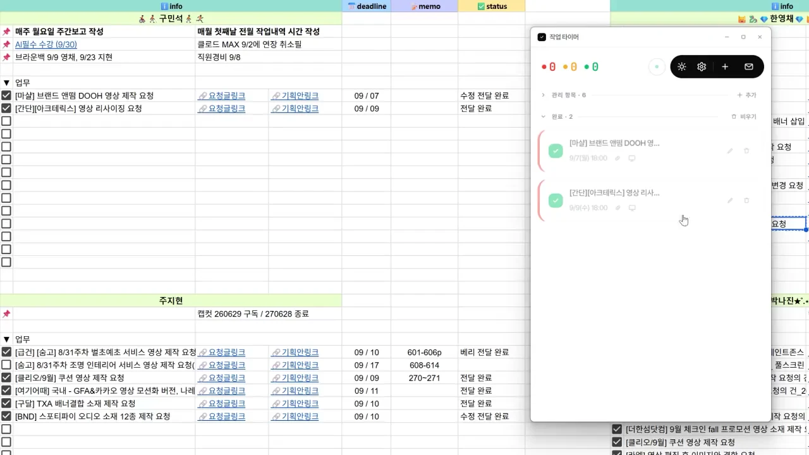

01 / BATCH RENAME COMPS
배치 리네이머
After Effects 컴포지션 이름의 필드를 바꾸거나, 선택한 컴포지션 이름을 일괄 변경합니다.
여러 파일명을 일괄 수정·관리해 반복 작업에 드는 공수를 줄이고, 수작업으로 파일명을 입력할 때 생기는 휴먼 에러를 방지합니다.
배너 결합부터 컷 편집까지.
기존대비 80.7배 빨라진 속도로 완료하세요.
1분 40초는 배너 1개 결합 구간의 실측, 1시간 13분은 설문 11건의 기존 방식 예상 작업 시간 평균입니다. ‘4~5시간’ 응답은 중간값으로 계산했습니다. 응답별 시간 보기
9단계에 걸친 무거운 프로세스를 진행하면서 각 단계별로 다양한 병목현상이 발생합니다.
기획안 내용 관련 커뮤니케이션이 필요하거나, 작업자가 먼저 들어온 업무 중이거나, 휴먼 에러로 인한 수정이 반복되거나.
영상·배너·음원을 가져오고
연결하고, 필요한 만큼 편집하면
완성된 결과물을 확인합니다.
반복 작업은 직접. 영상팀은 전문 제작에 집중합니다.
개발 경험이 없었기에, 배너노드 제작에 앞서 크리에이티브 본부에서 활용할 업무 효율화 도구 3종을 먼저 만들고 배포했습니다.
요구를 구체적으로 전달하는 법AI에게 무엇을, 어떻게 설명해야 쓸 만한 결과가 나오는지 익혔습니다.
구현의 강점과 한계를 구분하는 법AI가 잘 구현하는 것과 어려워하는 것을 실제 작업으로 확인했습니다.
결과를 검증하고 판단하는 법AI의 답을 어디까지 신뢰할 수 있는지 배웠습니다. 이때 생긴 확인 습관이 배너노드의 검증 절차로 이어졌습니다.

After Effects 컴포지션 이름의 필드를 바꾸거나, 선택한 컴포지션 이름을 일괄 변경합니다.
여러 파일명을 일괄 수정·관리해 반복 작업에 드는 공수를 줄이고, 수작업으로 파일명을 입력할 때 생기는 휴먼 에러를 방지합니다.

인트라넷 영상 요청을 팀 Google Sheets에 등록하는 브라우저 확장프로그램입니다.
기획자의 요청이 올라올 때마다 제목·링크·마감일정을 시트에 일일이 복사하던 과정을 클릭 한번으로 요청 내용을 불러올 수 있어 불편함을 해소하였습니다.

MBO 면담에서 일정 관리에 어려움을 겪는 팀원의 사연을 듣고 만들어야겠다는 생각이 들었습니다. Google Sheets 업무현황과 연동해 작업·마감·남은 시간을 한곳에서 관리합니다.
브라우저가 활성화되어 있지 않으면 메일 알림을 놓치는 문제도 함께 해결하고자 독립 앱으로 개발했습니다. 작업 시간을 관리해주고, 메일 알림을 놓치는 일이 없도록 도와줍니다.
선행 도구 3종의 개발 경험을 바탕으로 배너노드 제작 시작.
사내 NAS를 앱에 연결해 소재 스트리밍과 파일 업로드·다운로드를 한곳에서 할 수 있도록 구현.
실제 업무에 배포하고 사용 중 발견한 문제를 개선.
교육 세션 이후 문의와 설문으로 사용자 의견 수렴.
영상팀장 구민석 · 1인 제작
업무 요구, 앱 디자인, 인터랙션, 실기 검수와 사용자 대응.
코드 작성, 자동 검사, 문서화.
역할을 나눈 에이전트의 상호 검수로 개선점을 확인.
배너노드와 애드아카이브의 개발 과정에서 남긴 대표적인 19개의 검증 사례입니다.
검사와 실측으로 확인한 결과, 개선 판단과 적용 범위를 함께 기록했습니다.
특정 렌더 검증에서 배너·배치·영상 324개 조합을 검사했습니다. 결함 72건을 확인한 뒤 수정하여 해당 검사에서 0건으로 줄였습니다.
모든 환경의 무결함을 뜻하지 않으며, 전체 검증 횟수와도 구분합니다.
미리보기를 미리 만들어 둘지 정해야 하는데 그 작업이 한 시간짜리인지 사흘짜리인지 백 배 차이가 나 결정을 못 했습니다. 그래서 사내 라이브러리 전량을 재서 생성 시간 모델을 세웠습니다. 영상 15,264편 697GB, 길이 중앙값 17초, 생성 시간은 대략 고정 1초에 길이당 0.021초로 전량 약 7시간이었습니다.
한 대의 서버와 그 시점 라이브러리 기준이며 다른 장비에 그대로 적용되지 않습니다.
컷 편집과 배너를 함께 렌더하면 첫 프레임에 배경색 한 장이 끼던 문제를 고친 뒤, 32개 조합을 전부 렌더해 통과를 확인했습니다. 고치지 말아야 할 쪽도 봤습니다 — 트림 없는 렌더의 프레임 2,391장을 수정 전과 픽셀 단위로 대조해 전부 동일했습니다.
이 검사 범위 안의 동일성이며 모든 입력에 대한 보장은 아닙니다.
권한에 따라 일부 자료를 감추는 기능을 서버 다섯 곳에 넣고 끝났다고 봤습니다. 반대 검증이 우회로 아홉 개를 더 찾아냈습니다. 서버 주소를 전수로 표에 옮겨 그 표를 기준으로 다시 막고, 두 계정군을 22항목으로 비교해 확인했습니다.
이 기능 범위에서의 결과이며, 우회 방법 자체는 여기 적지 않습니다.
기능이 붙을 때마다 별도 AI에게 「통과시키지 말고 틀린 곳을 찾아라」고 시켰습니다. 한 라운드에서 검수자 다섯이 40여 건을 제기했고, 디렉터 역할의 AI가 실측으로 8건을 기각했습니다. 최종 수정 대상 11건은 그 기능이 사내에 나가기 전에 전부 고쳤습니다. 기각 사유는 실현 빈도 0, 측정값 오류, 처방이 대가를 잘못 계산한 것이었습니다. 기각한 주체는 사람이 아니라 AI입니다.
한 라운드의 수치이며 전체 검수 횟수가 아닙니다.
조합을 바꿔 가며 전부 돌린 검증이 네 라운드 있습니다. 배너·구멍·영상 324개, 줌·팬 54개, 포맷·트림 32개, 재생 330개로 합계 740개입니다. 그중 실제로 렌더한 것은 410개이고 나머지 330개는 앱이 아니라 시뮬레이터로 돌린 재생 로직 검사입니다.
전체 검증 횟수가 아니라 「조합을 전부 돌린」 네 라운드의 합입니다.
프로젝트 저장이 원본을 먼저 비우고 쓰다 실패하면 직전 저장본까지 사라지는 구조였습니다. 임시 파일에 쓴 뒤 바꿔치우는 방식으로 고쳤습니다. 실패를 일부러 일으킨 실증에서 옛 방식은 원본 75바이트가 437바이트 쓰레기로 파괴됐고, 새 방식은 75바이트가 그대로 남았으며 임시 파일 잔여는 0이었습니다.
같은 볼륨 조건에서만 원자적입니다.
검토자 셋이 화면의 글자 대비가 부족하다며 명암비 수치를 제시했습니다. 그 수치를 그대로 믿지 않고 접근성 표준 공식으로 다시 계산해 전부 맞음을 확인한 뒤 고쳤습니다. 입력칸 테두리 1.06대 1과 안내 문구 2.58대 1이 기준에 미달이었고, 미달 항목을 한 색으로 통일해 4.78대 1로 올렸습니다. 새로 도입한 색은 0개입니다.
이 화면의 검사이며 제품 전체의 접근성 준수를 뜻하지 않습니다.
실행 후 창이 뜨기까지 1.78MB 문서 로드를 기다리느라 2.5초간 화면이 비어 있었습니다. 메시지 루프가 도는 즉시 창을 띄우도록 바꿔 2.55초에서 0.85초로, 처음 실행은 5.9초에서 1.77초로 줄였습니다. 창이 뜨는 시각이지 문서를 쓸 수 있게 되는 시각은 아닙니다.
한 대의 PC 실측입니다.
만들 수 없는 미리보기를 열 때마다 2초 간격으로 스무 번, 40초를 헛돌고 있었습니다. 서버가 이미 보내고 있던 종료 신호를 읽도록 고쳐 40초가 5밀리초가 됐습니다.
이 한 경로의 수치입니다.
1080p 11MB 파일 여덟 개를 불러오는 시간을 순차 0.98초에서 병렬 0.31초로 줄였고, 캐시가 맞으면 0.011초입니다.
개발 PC 한 대의 실측이며 파일 크기와 저장 매체에 따라 달라집니다.
활동 달력이 기간이 길어질수록 세로로 무한히 늘어나 3,268픽셀까지 갔습니다. 주 단위 세로 배치로 다시 설계해 격자 높이를 70픽셀로 고정하고 상세 화면 전체를 약 833픽셀로 줄였습니다. 74% 감소이고, 새로 추가한 조작 요소는 0개입니다.
설계 계산과 실데이터 측정을 섞은 값이며, 사용자 만족도를 잰 것은 아닙니다.
한 화면을 다섯 역할이 나눠 검토했습니다. 34건의 제안을 근거와 대조해 재검토하고, 필요한 2건만 반영했습니다. 기각한 제안은 32건(94%)이며, 실제로 바뀐 것은 세 줄입니다.
기각률이 94%라는 것은 그 화면이 이미 요건을 만족했다는 뜻이지 제안이 무의미했다는 뜻이 아닙니다.
버튼이 누를 때 어긋나 보인다는 제보를 측정으로 추적했습니다. 아이콘 정렬은 0.00픽셀로 정확했고, 원인은 배율 라벨의 폭이 48.00픽셀과 48.80픽셀 사이에서 변해 생기는 0.41픽셀 레이아웃 이동이었습니다. 라벨 폭을 고정해 20%부터 250%까지 다섯 구간 전부 0.00픽셀로 만들었습니다.
브라우저 계산값 실측입니다.
달력 셀을 버튼으로 바꾸자는 제안이 있었습니다. 그대로 하면 키보드 탭 정지점이 371개 생겨 키보드만 쓰는 사람에게 화면이 통과 불가가 됩니다. 격자 하나를 방향키로 이동하는 방식으로 대체했습니다.
접근성 개선안 하나를 다른 안으로 바꾼 것이며, 보조기술로 실사용 테스트를 한 것은 아닙니다.
회사 계정만 들어오게 하는 판정을 우회하는 아홉 가지 방법을 만들어 전부 차단되는 것을 확인했고, 설명서 쪽은 19케이스를 실측했습니다. 유사한 주소가 통과하지 못하도록 정확 일치 검사를 유지했습니다.
이 케이스 범위의 검사입니다.
화면이 검게 뜨는 사고를 고치는 동안 「판정식이 항상 참이 되는」 같은 형태의 실수를 세 번 반복했습니다. 그 세 번을 표로 남기고, 가드 조건을 바꿀 때 그 값이 상수가 되지 않는지 먼저 증명하는 규칙 세 개를 세웠습니다. 실패를 지우지 않고 남긴 기록입니다.
이 사고 하나에서 나온 횟수이며, 프로젝트 전체의 실수 수가 아닙니다.
외부 공유 링크의 첫 로딩이 느린 원인을 다섯 갈래로 나눠 분석하고 압축과 왕복 제거, 전용 썸네일 경로를 적용했습니다. 정적 자원이 291KB에서 89KB로 70% 줄었습니다. 내부 화면에는 영향이 없는 것을 확인했습니다.
전송 크기 감소치이며, 체감 속도는 회선과 거리에 따라 다릅니다.
배포 압축 파일이 실행 파일을 빠뜨린 채 「성공」으로 끝난 적이 있습니다. 크기만 봤으면 넘어갔을 사고라, 그 자리에서 388개 파일을 양방향으로 전수 바이트 비교해 확정하고 압축 검수 기준을 크기가 아니라 전수 대조로 바꿔 적었습니다.
그 릴리즈의 일회 검사이며 자동 게이트도 앱 동작 검증도 아닙니다.
2026.09.10 개발 기록 정리 자료 기준. 각 수치는 해당 장비·화면·검사 범위에 한정합니다.
기존 과정을 가장 이상적인 흐름으로 진행해도,
배너노드와의 차이는 확연했습니다.
기획·요청·확인·배정·제작·공유재생 완료
필요한 순간, 필요한 작업만재생 완료
484 ÷ 6 ≈ 80.7
(484 − 6) ÷ 484 × 100 ≈ 98.8%
2026.08.12 교육 세션 · 동일 작업의 단일 비교 시연
8분 4초와 6초로 계산한 결과입니다.
녹화 측정값 484초와 6초를 기준으로 계산했습니다. 감소율은 (484−6)÷484입니다. 위 화면은 제공된 편집 녹화본을 파일 재생속도 1배로 보여줍니다. Ready 화면과 편집본의 재생 길이는 작업 측정 시간에 포함하지 않습니다. 실제 업무의 전달·대기 시간은 별도로 측정하지 않았습니다.
하나씩 결합하던 작업을, 노드 사이의 연결로 바꿨습니다.
1분 40초 × 1개
개별 결합 1회
결합 작업 생성 · 녹화본 측정값
연결은 한 번. 전체에 적용
기존 방식은 배너 1개당 1분 40초를 수량에 곱한 계산입니다. 0.01초는 녹화본의 결합 작업 생성 측정값이며, 수량 전환은 해당 수치를 적용한 작업 방식의 비교입니다. 파일 출력에 필요한 렌더 시간은 별도입니다.
2026.09.10 마감 · 총 24명 응답 · 사용 경험자 22명 / 미사용자 2명
아래 평가는 사용 경험자 22명의 응답입니다.
Q6 · 사용 난이도 · 전체 5개 선택지
긍정 응답 22/22명
Q8 · 사용 만족도 · 전체 5개 선택지
긍정 응답 22/22명
Q14 · 기존 프로세스 대비 · 전체 5개 선택지
긍정 응답 22/22명
Q9 · 사용 경험자 22명 · 복수 선택 · 선택 수 상위 5항목
Q7 · 처음 사용할 때 막혔던 지점 · 복수 선택
막힌 곳 없음 16명 / 22명 · 문항 미응답 1명
자유 의견에서는 결과물 파일명 조정, 노드 연결 해제와 미리보기 클릭 개선, NAS 경로 즐겨찾기, 영상 위치 조정과 소재 드래그 추가 등이 제안됐습니다.
기존 방식의 예상 시간과 배너노드로 직접 작업한 시간을 비교했습니다.
각 사례의 속도 향상과 시간 절감을 함께 확인하세요.
응답자가 적은 예상·사용 시간 기준이며, 녹화 실측과는 구분됩니다.
속도 향상 = 기존 예상 시간 ÷ 사용 후 응답 시간 · 시간 절감률 = (기존 예상 시간 − 사용 후 응답 시간) ÷ 기존 예상 시간 × 100
Q16·Q17의 자기보고 응답 11건이며, 두 시간 중 하나 이상이 없는 11건은 제외했습니다. 녹화 실측과는 다르며, 사례를 합산한 평균 속도 향상률은 산출하지 않았습니다.
범위·상한은 그대로 반영하고, 막대의 사선 구간으로 표시했습니다. 0.1분은 6초, 0.5분은 30초로 환산했습니다. 작업명은 광고주명을 제외해 정리했습니다.
2명 모두 업무에 필요한 상황이 없었다고 응답했습니다. 향후 사용 계기로 루프 영상 생성과 BGM·에셋 자료 제공을 제안했습니다.
2026.09.10 최종 집계 · 사내 자발적 응답 24명
출처: BannerNode 사내 설문 Q1–Q17. 전체 임직원의 평가나 평균 절감률로 일반화하지 않습니다.
영상과 배너를 선으로 연결하세요. 배너의 투명한 영역을 자동으로 검출하고 영상을 맞춥니다. 미리보기에서 크기와 위치를 자유롭게 조정할 수 있습니다.
쓸 구간만 골라 영상을 짧게 다듬으세요. 컷편집에서 양 끝 손잡이를 움직여 구간을 정하고, 길이를 확인한 뒤 적용합니다.
한 영상을 여러 크기로 활용하세요. 필요한 크기를 함께 고른 뒤, 여백 배경의 흐림과 밝기를 조절해 적용합니다.
공유 소재를 한 화면에서 주고받으세요. 저장소(NAS)의 영상과 배너를 함께 끌어오고, 작업 화면의 음원은 저장소로 끌어 올립니다.
짧은 영상을 반복해 더 길게 활용하세요. 반복 횟수를 바꾸며 총 길이를 확인하고, 완료를 눌러 렌더큐에 추가합니다.
파형을 보며 음원도 필요한 구간만 남기세요. 양 끝 손잡이로 구간을 정하고, 파형을 확대하거나 앞뒤로 이동하며 세밀하게 다듬습니다.
목표 용량에 맞춘 압축, mp4·mov·gif·png 출력, 매체별 지면 가이드와 위험영역 강조를 지원합니다. 가이드는 미리보기에만 겹치고 렌더 결과에는 들어가지 않습니다.
기획자는 영상팀의 소재를 한눈에 확인하기 어려웠고, 디자이너는 레퍼런스 요청이 올 때마다 영상을 찾아 전달해야 했습니다. 이 과정을 줄이기 위해 배너노드의 NAS 탐색 기능을 확장해, 필요한 영상을 직접 찾고 허용한 범위만 공유하는 애드아카이브를 만들었습니다.
카테고리·작업 성격·날짜·작업자 등 원하는 조건으로 필요한 영상을 찾습니다. 이제 매번 수급을 요청하고 기다릴 필요가 없습니다.
영상을 직접 보고 디자인과 레이아웃을 확인합니다. 필요한 소재는 내려받아 다음 작업에 활용합니다.
외부에 공개할 수 없는 정보는 제외하고, 허용한 영상만 비밀번호·권한·유효기간을 정해 공유합니다.
같은 예제 소재로 연결하고, 재생하고, 완성해 보세요.
예제는 영상·투명 배너·음원 3종입니다. 내려받은 파일을 캔버스로 드래그해 사용하세요.
기획자는 간단한 작업을 직접 끝내고,
디자이너는 전문 제작에 더 집중할 수 있게 됐습니다.